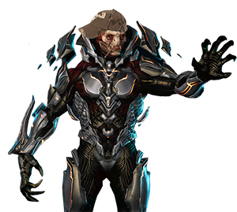

Personnel
Derderct - During the time of Forerunner Ecumene, I was the proud leader of the Ecumene's military as I fought by my fellow Prothmentans in the front lines of combat. When the humans attacked us around 107,445 BC, I led my forces against the powers of Human-San'Shyuum alliance. Ultimately they stood no chance against us as we brought their alliance to its knees but at great cost as many Forerunners inducing my 12 children were lost during the thousand year war. When the space zombies came, I was forced to take desperate measures to stop the Flood's advance. This led me to transform my Prothmentan warriors into robots to avoid infection but I needed greater numbers. I then turn toward the humans and forcibly turn them into Prothmentan robots to aid in the fight against the Flood as I felt they haven't paid for their crimes against the Ecumene and the Mantle of Responsibility during the Human-Forerunner War. This act was consider unethical by my people and my wife, the Librarian, as they betrayed me and locked me away for 100,000 years as punishment. 100,000 years pass and I tricked a human, Master Chief John-117, into freeing me from my wife's prison. Since then I have continued my campaign turning humans into robots in order to rebuilt the Forerunner Ecumene and bring peace to the galaxy.
Librarian - When the Forerunner Ecumene ruled the galaxy, the Librarian was the lead Lifeworker, the caretakers and biologist to all life within the Ecumene, and was my wife for over 75,000 years as well as the mother of my 12 children. During the our war with the Flood, she was in charge of all Flood research operations and efforts to index known lifeforms in order to repopulate the galaxy after the Halo array fired. During this time she discovered that humans were the Precursors' heirs to the Mantle of Responsibility and gave them the title of Reclaimers, those who have access to the left behind relics and powers of the Forerunners once we were no more. As I was turning her precious pets into Prothmentan robots, she made attempts to stop me from interfering with her plans. She imprison me in the center of Requiem in the hope that I would see the errors of my ways and help the humans archive Mantle of Responsibility. She died on Earth when she sacrifice herself in order to lure to the Flood towards her, giving us enough time to fire the Halo array.
Master Chief John-117 -Born on March 7, 2511, John was just a normal child in Elysium city on the human world of Eridanus II. But this all changed in 2517 when, at the age of six, he and 149 other children across human space were abducted by the UNSC to be candidates for their Spartan II super solider program and was one of 33 candidates who survived the augmentation procedures. When the Human-Covenant War raged across the galaxy, Master Chief John-117 had become a legends among UNSC and Spartan force with excellent performance on the battlefield led him to become the leader of the Spartan IIs. During the Fall of Reach, he lost all of his Spartans in the battle and was forced to flee the burning planet onboard the UNSC Pillar of Autumn, making him the last living Spartan. During the final months of the Human-Covenant War, Master Chief became humanity's savor as he destroyed Halo Installation 04 to contain its Flood outbreak, assist the UNSC/Sangheili forces to eliminate the last remaining Covenant hierarch, and stayed behind to activate the unfinished Halo Installation 08 bring an end to the Covenant and Flood once and for all. After seven years of being stranded in space, Master Chief John-117 crash lands on Requiem and tricked into releasing me, the Derderct, from my metal prison. Since then, he been seeking to stop me in order to protect humanity from the return of the Forerunners.
Arbiter Thel 'Vadam - During and after humanity's war with the Covenant, Thel 'Vadam was a legendary figure among the Sangheili with some calling him Master Chief John-117's equal. During the early years of the Human-Covenant War, he rose through the ranks within Covenant military ultimately gave him the rank of Supreme Commander, making him the youngest in his species to have achieve the rank, and was given command of one of the Covenant's largest fleet, the Fleet of Particular Justice. Throughout the war, Thel 'Vadam led the Fleet of Particular Justice with honor and distinction destroying seven human worlds resulting in the loss of over a billion human lives making Thel 'Vadam single handedly responsible for 4.3% of the total 23 billion human casualties. Not only that but his fleet took apart in major events in the Human-Covenant as the Fleet of Particular Justice was the Covenant fleet that destroy the human planet of Reach during the Fall of Reach and was the same fleet that followed the UNSC Pillar of Autumn to Halo Installation 04. After losing his fleet during the destruction of Halo Installation 04, Thel 'Vadam was called before the hierarchs only be striped of his rank and be publicly humiliated for his failure of not stopping Master Chief John-117 from overloading the Pillar of Autumn's fusion reactor. Afterwards the hierarchs offer Thel 'Vadam the rank of Arbiter, a rank only given to the most disgraced Sangheili warriors who send on the most dangerous assignments ordered by the hierarchs themselves, and accepts the offer in order to regain what little honor he had left. As fate would have it, this led to him to discovering the Halo array's true purpose and that Covenant's religion of The Great Journey was a lie. This would have Arbiter Thel 'Vadam forming an uneasy alliance with the humans to stop the Covenant from activating Halo Installation 05. There he joined Master Chief John-117 and other Sangheili/human forces to stop the last Covenant hierarch at the Ark. During these final battles of the Human-Covenant War, Arbiter Thel 'Vadam befriended Master Chief John-117 and even stayed behind to help him activate the unfinished Halo Installation 08 but the two were separated when the portal to Earth collapsed on itself. Ever since the end of the Human-Covenant War, Arbiter Thel 'Vadam became the leader of the Sangheili with him focused on uniting his people and creating peace with the humans.
Jul 'Mdama - A righteous Sangheili who saw the humans as the threat they were to the galaxy after the Covenant was defeated. His leaders however did not listen to him as they wanted peace with the humans which led to Jul 'Mdama being captured and experimented on by humans. This and the death of his wife, Raia 'Mdama, during a joint human/Sangheili operation filled Jul 'Mdama's soul with such hate and rage, worthy to that of a Prothmentan, towards the humans which gain him an empire of followers leading to him discovering my resting place on Requiem. He and his followers proven themselves to be quite useful after my liberation from Requiem's core as they were able to find the location of the Composer, a device used to turn organic beings into Prothmentan robots, and continued the fight against the humans on Requiem, after my recent defeat at Earth which led me to hide in the shadows until my opportunity arises. There I appointed Jul 'Mdama as my second in-command under the title of the Derderct's Hand and gave him control of my Prothmentans as I deal with my own matters at hand.